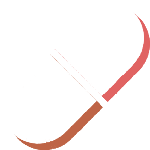
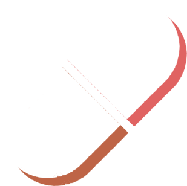

$universe on Solana
 

What is the future of the universe?

Well, using some science we can make a few predictions...
In 2061
Halley's Comet will return again.


In 2178
Pluto will complete its first orbit since discovery.

In 2300
After traveling billions of kilometers...

Voyager 1 will finally reach the Oort Cloud.
In 50,000 years
The star VY Canis Majoris will explode in a supernova.

The explosion will outshine the rest of the Milky Way.
In 75,000 years
A new Hawaiian island will surface.

In 100,000 years
Many of today's constellations will be unrecognisable.

In 1 million years
Two of Uranus' moons will collide.

The planet can't catch a break.
In 50 million years


The Martian moon Phobos
will slowly break up.
will slowly break up.

So Mars will get its own ring.
In 100 million years
As Mars gains a ring...
Saturn will slowly lose them.

Oddly, Saturn will spend most of its life without rings. It's just a
phase.
In 180 million years
The Moon continues gradually slowing down the Earth.

Days become 25 hours long. Hopefully work hours don't also increase.
In 600 million years
The last total solar eclipse happens.

Since the moon is further away, total solar eclipses will no longer be
possible.

Don't forget your glasses!
This is one you don't want to miss.
In 800 million years
As the Sun becomes brighter, photosynthesis is no longer possible on
Earth.

Without plant life, all animals go extinct.
And single cell organisms dominate the Earth once again.

In 1.1 billion years
The Sun will be 10% brighter.
The average temperature on Earth will reach 47 °C, or 116 °F.
And so the oceans will evaporate.
But on the bright side, Mars will enter the habitable zone and could
provide a new home.

In 5 billion years
The Andromeda Galaxy will collide with the Milky Way.

And our new home galaxy will be called Milkdromeda.

We will gain a trillion neighboring stars. Anyone left will see an
incredible night sky.

In 7 billion years
As the Sun becomes a red giant, it grows to 256 times its current
size.

After billions of years of providing energy to the Earth, The Sun eats
the Earth.
It was a good run, but the Earth was freeloading for too long.
The Sun also eats Mercury and Venus for good measure.
In 8 billion years
After the Sun's rampage, it cools down.
And becomes a white dwarf star.
Any remaining life will need to get a lot closer to stay warm.
In 450 billion years
The 50+ galaxies in the Local Group merge.

The group is back together.
In 1 trillion years
Radiation leftover from the Big Bang becomes undetectable.

Making it harder for future civilizations to learn about the universe.
In 10 trillion years

Red dwarf stars turn into the first ever blue dwarf stars.
In 100 trillion years
The gas clouds needed to make stars are depleted.

Somewhere in the universe, the last star is born.
And soon only white dwarf, brown dwarf, and neutron stars are left.
In 1015
years
Everything outside the Local Group is impossible to reach due to the
expansion of the universe.

Even the speed of light won't be fast enough to reach distant
galaxies.
In 1017
years
White dwarf stars cool to black dwarf stars. The universe is dark.
The only natural light comes from the occasional supernova.
In 1030
years
Black holes are the only things remaining, and they are massive.

But even they slowly evaporate from Hawking Radiation.
In the last few seconds of a black hole's life, it will emit a burst
of light.

Providing the last light in the universe.
Like a final firework show, but each firework billions of years apart.
After that the universe is basically dead, with nothing of interest
happening.
But don't worry, there's plenty of time left.

If the life of the universe was a year, you're living in the first
millisecond of January 1st.
So enjoy the ride.